Культур·
индустрия
Почему они так похожи?
Шесть блокбастеров, миллиарды сборов, разные герои. Но постеры, ритм, структура, финал — почти неотличимы. Это не совпадение и не лень режиссёров.

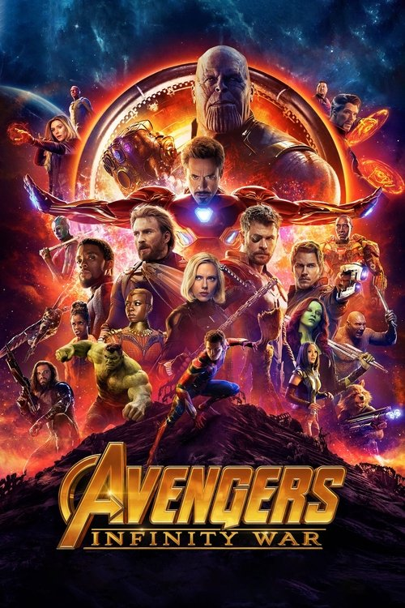
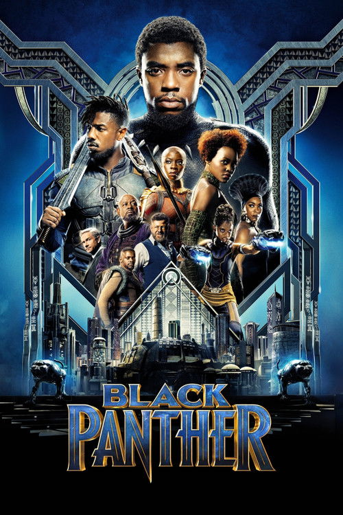
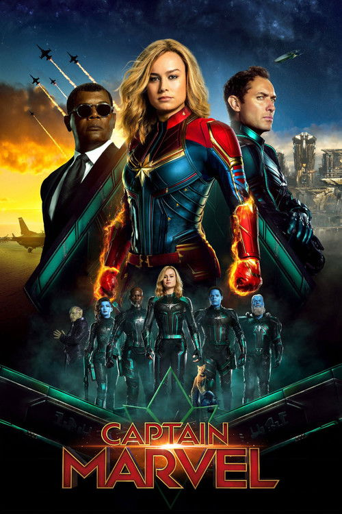
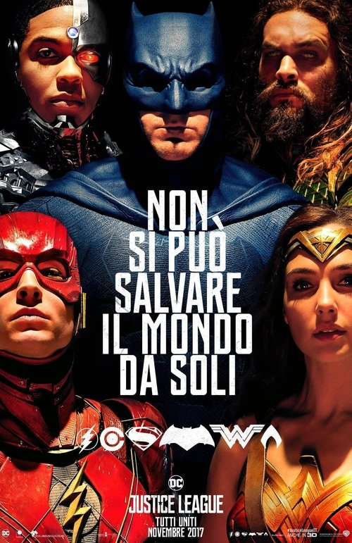
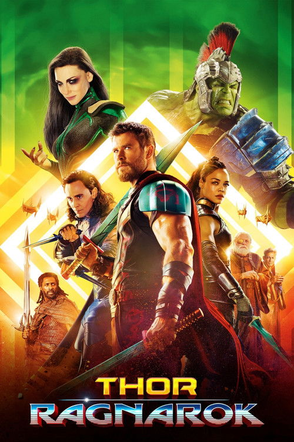
Где мы в курсе
В лекции 2 форма была орудием пробуждения. Теперь — зеркальный поворот: Франкфуртская школа смотрит на ту же киноиндустрию и видит машину усыпления. Мы возвращаемся к кино-как-товару (лекция 1) на новом, более мрачном витке — и здесь же раскрываем экономический пласт: студию как фабрику.
Три вопроса лекции
Не история идей Адорно, а расследование. Вся лекция — попытка ответить на три вопроса, и каждый тянет за собой следующий.
Почему капитализм массово производит культуру?
Студия как фабрика: экономика, разделение труда, прибыль.
Что происходит с искусством, ставшим товаром?
Стандартизация, псевдоиндивидуализация, развлечение как труд.
Может ли массовое кино оставаться критическим?
Критика Адорно, активный зритель, кино против индустрии.
Отдых — это свобода
или ещё одна смена?
Тезис Франкфуртской школы: «свободное время» под капитализмом восстанавливает рабочую силу для следующего рабочего дня. Развлечение не противоположно труду, а его продолжение.
Эмигранты
напротив Голливуда
Бежавшие от нацизма теоретики Института социальных исследований оказались в США: институт — в Нью-Йорке, Адорно и Хоркхаймер — под Лос-Анджелесом, рядом с фабрикой грёз. «Диалектику просвещения» (1944/47) они пишут, наблюдая Голливуд из эмиграции.
Их подозрение: между тоталитарной пропагандой, от которой они бежали, и весёлой американской индустрией развлечений есть тревожное родство — обе штампуют согласие.
Т. Адорно, М. Хоркхаймер; рядом — Беньямин, Маркузе.
США, Калифорния — в виду самого Голливуда.
Фашизм научил: культура может организовывать массы.
Почему «культур·
индустрия» — на двоих
Понятие родилось не у одного Адорно. «Диалектику просвещения» (1944/47) Адорно и Хоркхаймер писали вместе, в эмиграции — как общий счёт Просвещению, которое обернулось и Голливудом, и Освенцимом.

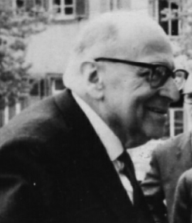
Директор Института, автор программы «критической теории».
Музыковед и эстетик — отсюда примеры из поп-музыки и формы.
Франкфуртская школа: марксизм без партии, критика без иллюзий.
Пробуждение → усыпление
Кино будит
Монтаж шокирует, разрывает иллюзию, рождает классовое сознание. Форма — оружие революции.
Голливуд усыпляет
Гладкая форма убаюкивает, подтверждает мир таким, как есть. Развлечение — анестезия.
Одна и та же технология (массовое кино) у одних — инструмент освобождения, у других — инструмент подчинения. Разницу делает не техника, а кто и зачем ею владеет.
Культур·
индустрия
Адорно и Хоркхаймер сознательно избегают слов «массовая культура»: те намекают, будто культура поднимается снизу, от народа. Их термин подчёркивает обратное — это индустрия, производящая культуру сверху, как любой другой товар.
Культуриндустрия накладывает на всё один и тот же штамп.
Где здесь
марксизм
Это лекция, где экономический пласт курса виден прямее всего. Культуриндустрия — это реальное производство: студия организована как фабрика, с разделением труда, конвейером смен, нормами выработки и наёмными работниками.
Фильм здесь — товар в самом прямом марксовом смысле: произведён ради прибавочной стоимости, а его «художественность» подчинена рентабельности.
труда
Сценарист, оператор, монтажёр, аниматор — узкие операции на конвейере.
Жанр и формула снижают риск и удешевляют производство.
Критерий не «истина» или «красота», а кассовый сбор.
Студийная система: машина минимизации риска
Вертикальная интеграция
«Большая пятёрка» владеет всем — производством, прокатом и кинотеатрами. Фильм застрахован сбытом ещё до съёмки.
Жанр снижает риск
Вестерн, мюзикл, нуар — готовые матрицы. Капитал не любит неопределённости и повторяет то, что уже продалось.
Звезда как товар
Актёр на контракте — узнаваемый товарный знак. Его лицо продаёт билет надёжнее сюжета.
Адорно описывает не злой умысел, а экономическую логику: стандарт, жанр и звезда — способы капитала застраховать вложения. Эстетика следует за бухгалтерией. (Подробно — лекция 11.)
Всё новое —
по старому шаблону
Продукты индустрии строятся по общей матрице: завязка, кульминация, развязка, типы героев, тайминг эмоций. Детали меняются — структура неизменна. Зная начало, вы предугадываете финал.
Стандарт удешевляет производство и приучает зрителя к предсказуемому — а значит, к согласию.
Псевдо·
индивидуализация
Чтобы стандарт продавался, его надо подать как уникальное. Мелкие отличия — новый герой, неожиданный твист, свежий саундтрек — создают иллюзию выбора и новизны, маскируя тождество продуктов.
«Выбирай своего любимого супергероя» — но матрица фильма одна на всех.
выбора
Множество опций при одной структуре.
отличия
«Фишка» продаёт повтор как новинку.
Зритель чувствует себя индивидуальным, оставаясь в шаблоне.
Развлечение —
продолжение труда
Зритель приходит в кино уставшим — и индустрия даёт ровно столько отдыха, чтобы он смог вернуться к станку. Развлечение не позволяет думать (мысль — это усилие), оно восстанавливает рабочую силу и приучает к пассивности.
Развлечение — это продолжение труда при позднем капитализме.
Индустрия штампует согласие
Стандарт
Единая матрица под видом разнообразия.
Псевдовыбор
Иллюзия новизны и индивидуальности.
Пассивность
Отдых вместо мысли, согласие вместо критики.
Вывод Адорно жёсток: культуриндустрия производит не сознание, а согласие. Она не лжёт о мире — она отучает желать иного.
Самая
пессимистичная глава
Держите в уме: это крайняя точка курса. Адорно почти не оставляет зрителю свободы — и за это его будут критиковать.
Беньямин возразит: техника может и политизировать массы, а не только усыплять.
Грамши и Холл: зритель не пассивен, прочтение бывает оппозиционным.
Элитизм ли это — презрение к «низкому» вкусу масс?
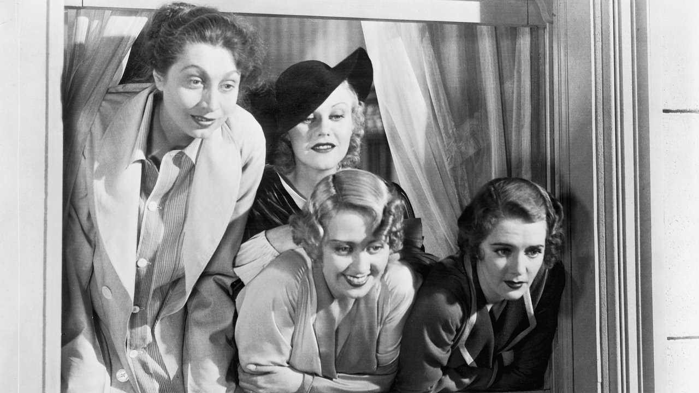
Золотоискатели 1933
искатели 1933номера Базби Беркли
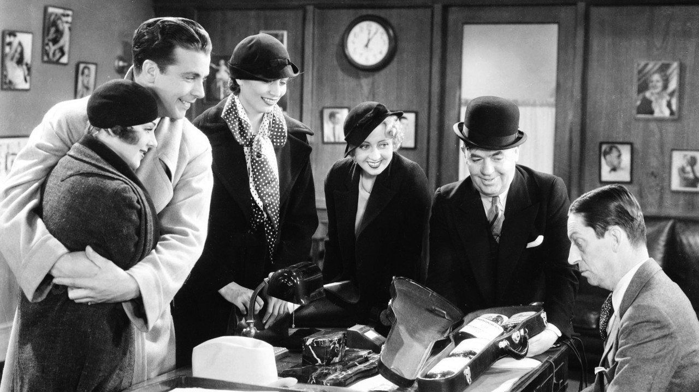
Золотоискатели 1933
Бэкстейдж-мюзикл Warner о девушках, ставящих ревю в разгар Депрессии. Хореография Беркли превращает десятки танцовщиц в геометрический узор, снятый сверху.
Идеальный наглядный материал для тезиса о механизированном, поставленном на конвейер удовольствии.
Студийная система
на пике
1933 год, дно Великой депрессии. Warner Bros. выпускает мюзиклы как с конвейера: серия «Золотоискателей» и «42-я улица» — продукты студийной фабрики с жёстким разделением труда между режиссёром драмы и постановщиком номеров.
Массовое развлечение продаётся именно тогда, когда зрителю особенно тяжело — и обещает ему сияющий мир вместо очереди за пособием.
Безработица, нищета — спрос на эскапизм максимален.
Студийная система: фильмы как серийная продукция.
Несколько «Золотоискателей» подряд — франшиза до франшиз.
the Money«Золотоискатели 1933»
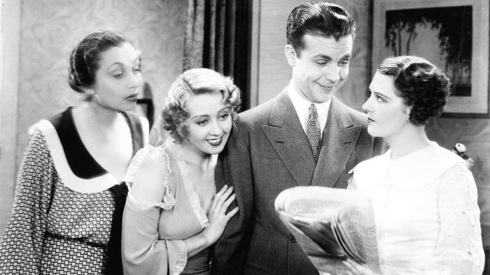
Деньги в разгар нищеты
Фильм открывается номером «We're in the Money»: танцовщицы в костюмах из гигантских монет поют о богатстве — посреди Депрессии. Репетицию тут же прерывают приставы, описывающие реквизит за долги.
Индустрия буквально продаёт фантазию о деньгах тем, у кого их нет: развлечение как компенсация за лишения.
Масса-орнамент
Беркли
Камера сверху превращает танцовщиц в симметричный узор — отдельный человек растворён в декоративном строе. Кракауэр назвал это «массой-орнаментом»: эстетика, выражающая саму логику капиталистической рационализации.
Прямой привет «Метрополису» (лекция 1): и синхронные рабочие, и синхронные танцовщицы — одно и то же превращение людей в узор.
сверху
Геометрия важнее лиц — индивид исчезает.
Тела движутся как единый механизм.
Удовольствие от порядка, а не от личности.
Что подтверждает тезис
Фильм почти буквально иллюстрирует Адорно: стандартный продукт, механизированное удовольствие, эскапизм как компенсация за тяготы труда.
Где сложнее
Но сюжет «Золотоискателей» сам говорит о безработице и долгах: индустрия иногда проговаривает то, что должна была бы прятать. Полного «усыпления» не выходит.
Урок метода
Даже образцовый продукт индустрии не до конца однозначен. Это первая трещина в пессимизме Адорно — её расширят Беньямин и Грамши.
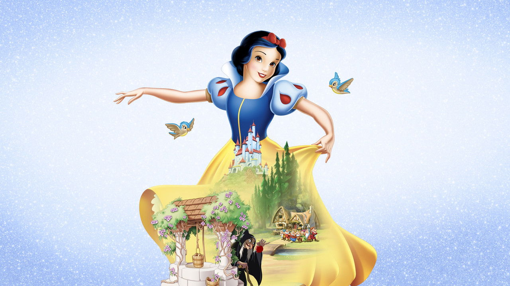
Белоснежка
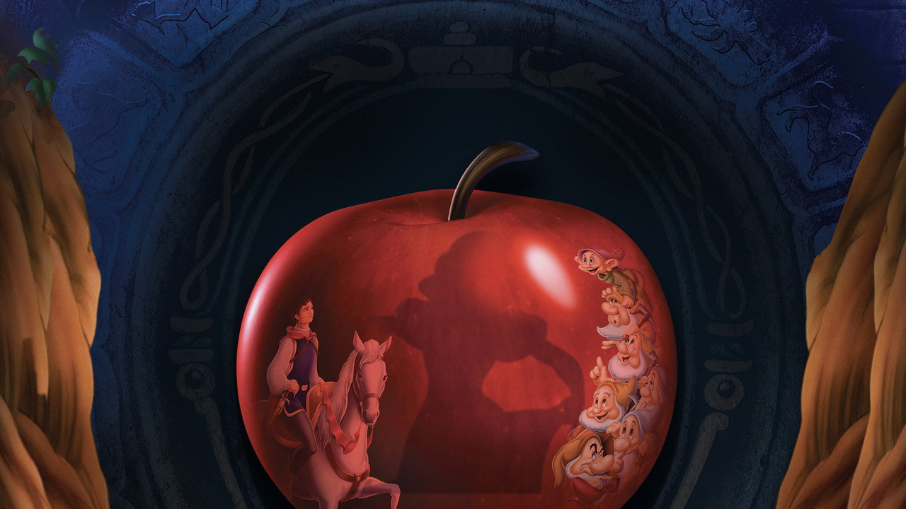
Белоснежка и семь гномов
Первый полнометражный мультфильм Диснея — и сам Адорно поминает Дисней в «Диалектике просвещения». Сказка собрана из узнаваемых блоков: принцесса, злодейка, комические помощники, спасение любовью.
За «волшебством» — индустриальный процесс рисованной анимации.
Забастовка
аниматоров
Лучшая иллюстрация к «студии-фабрике»: в 1941 году аниматоры Диснея вышли на забастовку за профсоюз и достойную оплату. «Фабрика грёз» оказалась обычным предприятием с классовым конфликтом между владельцем и наёмными работниками.
За каждым кадром «волшебства» — разделение труда: одни рисуют ключевые позы, другие — промежуточные, третьи заливают цвет.
Стачка художников против студии Диснея.
Анимация разбита на узкие повторяющиеся операции.
Готовая «магия» прячет труд сотен художников (см. лекцию 1).
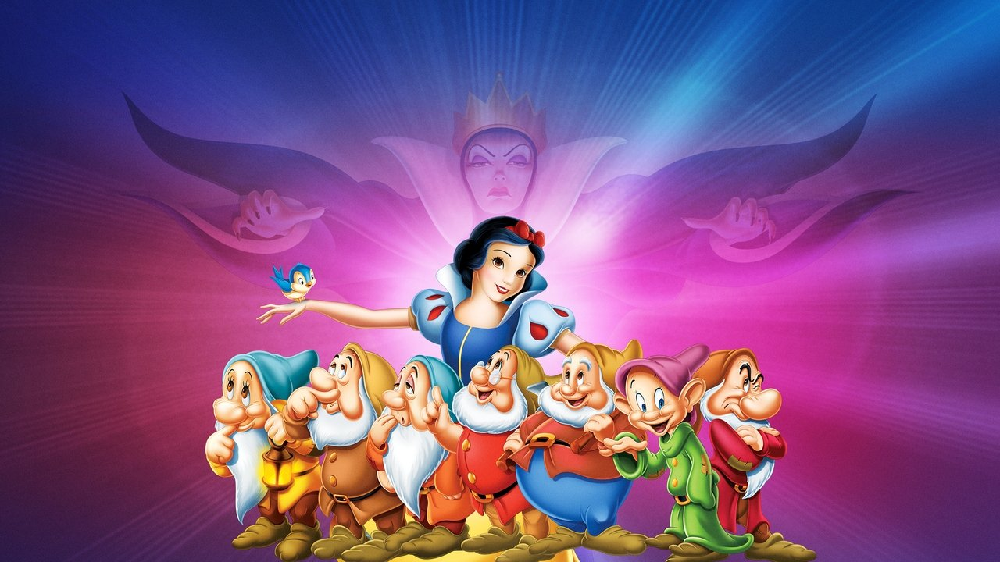
Милота по стандарту
Семь гномов — это семь готовых «характеров-функций» (Ворчун, Весельчак, Соня…): индивидуальность сведена к одной узнаваемой черте. Эмоции зрителя выверены и предсказуемы.
Это псевдоиндивидуализация в чистом виде: максимум «характерности» при минимуме настоящего различия.
Узнаваемость
как технология
Дисней доводит до совершенства стиль, который ни с чем не спутаешь: округлые формы, большие глаза, плавное движение. Узнаваемость — это и художественный приём, и бизнес-актив (бренд).
Адорно язвительно замечал: герои мультфильмов раз за разом получают побои — приучая зрителя стойко принимать собственные.
бренд
Эстетика работает как товарный знак.
Ничто не царапает, всё «приятно» — анти-очуждение.
Комедия насилия как урок терпения (по Адорно).
Что подтверждает тезис
Дисней — почти лабораторный случай: стандартная формула, узнаваемый стиль-бренд, эмоции по расписанию, реальная фабрика с забастовкой за кулисами.
Где сложнее
И всё же эти образы любят, помнят, пересобирают. Привязанность зрителя — не только «обман»: здесь и подлинная культурная память, которую Адорно склонен недооценивать.
Урок метода
Дисней показывает силу теории — и её слепое пятно: презрение к массовому удовольствию. Этот вопрос мы держим открытым до лекции 8.
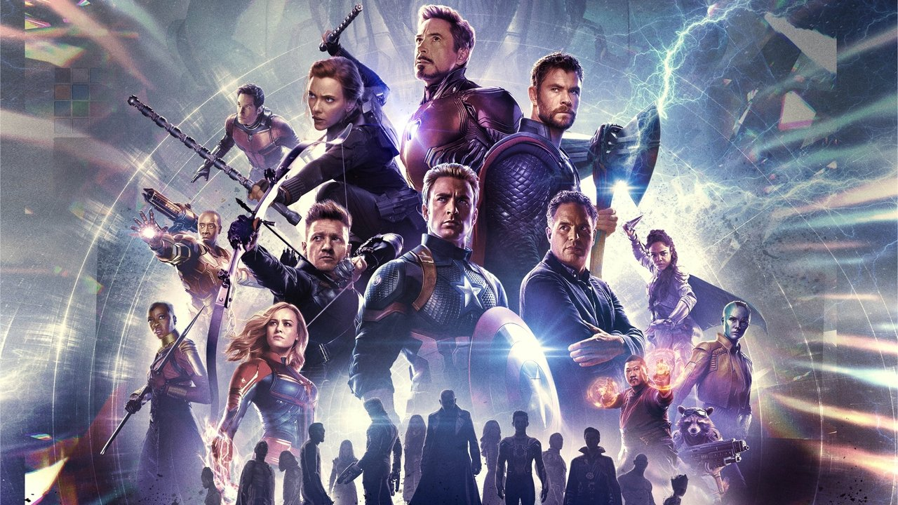
Мстители: Финал
Финалреж. братья Руссо
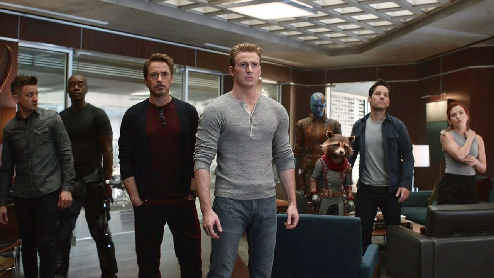
Мстители: Финал
Кульминация 22 фильмов и один из самых кассовых релизов в истории. Идеальный тест: работает ли тезис Адорно в эпоху кинематографических вселенных?
Каждый фильм «свой» — но все собраны по одной матрице «фазами», как продукция конвейера.
Франшиза
как фабрика
Marvel (внутри Disney) превратила производство фильмов в промышленный график: релизы по «фазам», единый дом-стиль, взаимозаменяемые режиссёры, унифицированный визуальный продукт на сотни миллионов бюджета.
Это студийная система Адорно, доведённая до предела: культура планируется, как выпуск моделей автомобилей.
Продукция выходит сериями по расписанию.
Узнаваемый шаблон важнее авторской подписи.
Один корпоративный собственник — Disney.
героев«Мстители: Финал»
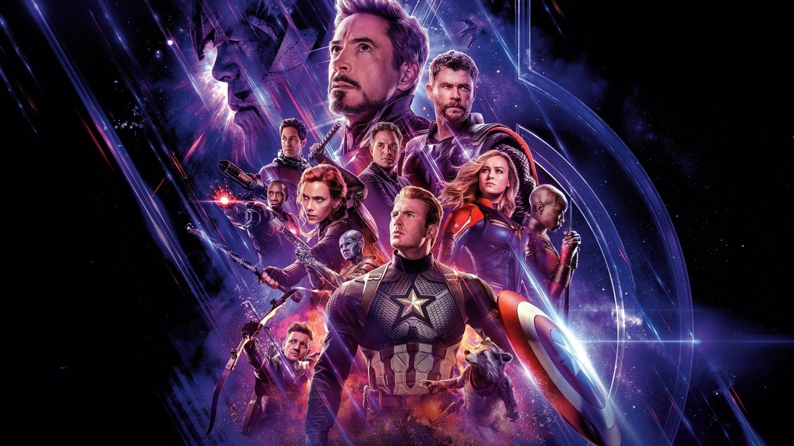
Каталог вместо характеров
Финальная битва — это парад всех героев вселенной: каждый со своей «фишкой», но все — пункты одного каталога. Зритель узнаёт и предвкушает, а не открывает новое.
Удовольствие здесь — от узнавания и комплектности, а не от непредсказуемости: чистая логика франшизы-коллекции.
Разное только
на поверхности
Каждый фильм маркирован «жанром» (шпионский, космический, комедийный), но структура, ритм шуток, тайминг экшена и финал — общие. Это псевдоиндивидуализация на индустриальном масштабе.
«Выбери любимого героя» — приглашение к идентификации, которое не меняет матрицу продукта.
жанра
Косметическое отличие поверх единой схемы.
Шутка-экшен-эмоция по выверенному графику.
после титров
Приём, продающий следующий продукт серии.
Адорно как будто прав
MCU выглядит триумфом его прогноза: культура планируется как промышленная серия, стандарт продаётся как событие, отдых — как пассивное узнавание.
Но есть и обратное
Фанаты не пассивны: они спорят, переосмысляют, создают фан-творчество, читают «против шерсти». Зритель — соавтор смысла, а не только мишень.
Урок метода
Marvel — лучший аргумент за Адорно и лучший повод его оспорить. Активность аудитории — мост к Грамши и cultural studies (лекция 8).
Один штамп, три времени
Конвейер
Масса-орнамент и эскапизм Депрессии.
Бренд
Стиль-знак и забастовка за кулисами.
Франшиза
Стандарт и псевдовыбор в планетарном масштабе.
За 86 лет техника изменилась радикально — а логика осталась: культура как стандартизованный товар. Вопрос лишь в том, так ли беспомощен зритель, как думал Адорно.
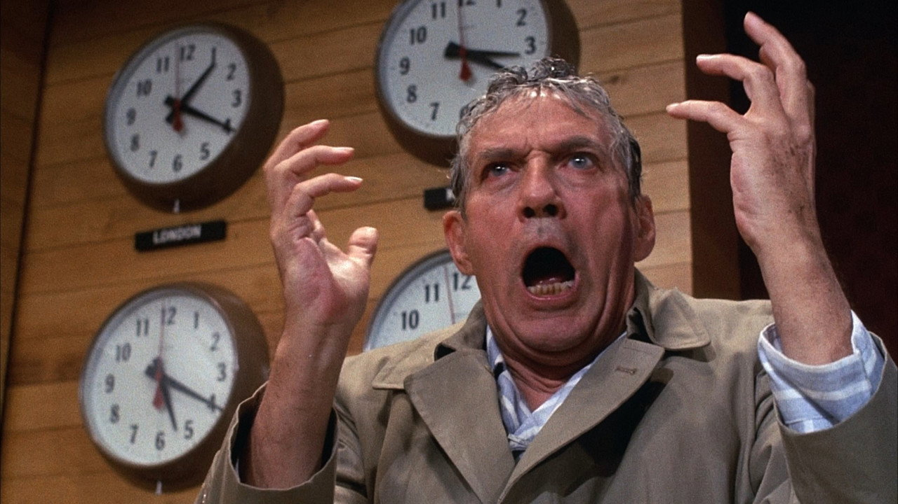
Network
Когда товар
обличает рынок
«Network» — голливудский продукт, который изнутри показывает, как телевидение превращает гнев, новости, саму жизнь в рейтинг и товар. Безумный пророк в эфире продаётся тем лучше, чем он безумнее.
Парадокс прямо по Адорно: фильм-критика индустрии сам произведён и продан индустрией — и собрал «Оскары».
как чёрт»
Протест мгновенно становится новым форматом и рекламной паузой.
= товар
Капитал коммодифицирует внимание и аффект (мост к лекции 11).
Массовое кино может быть критическим — но и критика продаётся.
Сильная теория — и четыре слепых пятна
Аудитория у Адорно — пассивная мишень. Но люди спорят, переосмысляют, читают «против шерсти».
тивление
Теория почти не допускает оппозиционного прочтения и низовой переработки культуры.
За «низким массовым вкусом» — презрение к самим массам, от чьего имени говорит критика.
Не объясняет сложные, но массовые фильмы — те, что и кассовы, и подрывны.
Продуктивный вывод: культуриндустрия — мощная тенденция, а не железный закон. Где Адорно видит только подчинение, курс будет искать зазоры борьбы.
Зритель не объект,
а соавтор смысла
Адорно видит зрителя как объект воздействия. Позже Стюарт Холл предложит модель сложнее: текст кодируется индустрией, но зритель декодирует его по-своему — иногда вопреки замыслу.
Полностью — в лекции 8 (Грамши и гегемония). Здесь важно одно: между «послано» и «понято» есть зазор, и в нём живёт борьба.
чтение
Зритель принимает смысл, как задумала индустрия.
Принимает в целом, но спорит в деталях.
ционное
Перечитывает текст против его же идеологии.
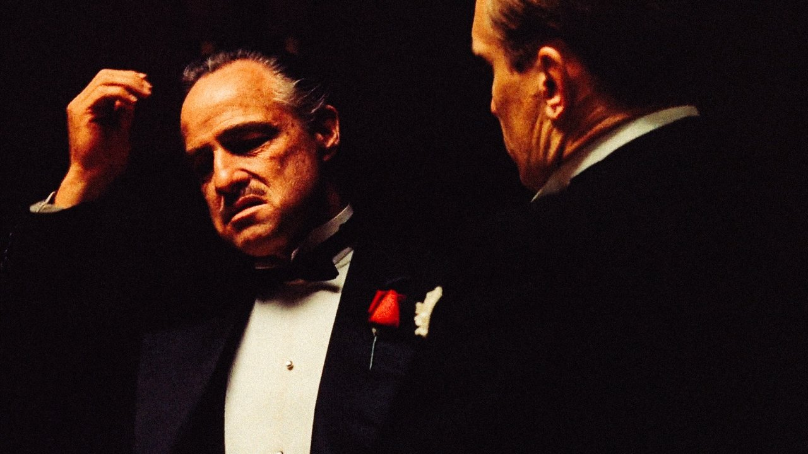
«Крёстный отец» (1972) — кассовый хит Paramount и одновременно большое авторское кино«Крёстный отец» —
продукт культуриндустрии?
Снят студией ради прибыли, по жанровой формуле, со звёздами на контракте — по всем признакам продукт индустрии. И при этом — сложное, авторское, критическое кино.
Для спора: рушит ли такой фильм теорию Адорно — или показывает, что «индустрия» и «искусство» не исключают друг друга? А Тарковский — вне индустрии или просто другой её сегмент?
Вопросы к дискуссии
Если вы любите какую-то франшизу — делает ли это вас «жертвой» культуриндустрии, или Адорно недооценивает зрителя? Где грань?
Чем «псевдоиндивидуализация» отличается от настоящего разнообразия? Как отличить их на практике, разбирая фильм?
Забастовка аниматоров Диснея: меняет ли знание о труде за кадром ваше восприятие «волшебства»?
Советский монтаж (л. 2) будил, Голливуд (л. 3) усыпляет. Возможно ли массовое кино, которое и развлекает, и будит?
Ключевые понятия
индустрия
Производство культуры сверху, как товара, а не «снизу» от масс.
зация
Единая структурная матрица под видом разнообразия.
видуализация
Мелкие отличия, маскирующие тождество продуктов.
орнамент
Узор из людей как эстетика капиталистической рационализации (Кракауэр).
= труд
Досуг восстанавливает рабочую силу и приучает к пассивности.
фабрика
Разделение труда и конвейер в производстве фильмов.
водство
раб. силы
Поддержание работника в готовности к новому труду.
Бегство в фантазию как компенсация за тяготы.
К просмотру
Три продукта индустрии из разных эпох — смотрите их как кейсы одной логики.
искатели 1933М. Лерой / номера Б. Беркли · СШАСцена: «We're in the Money». Понятия — стандартизация, масса-орнамент, эскапизм.
Финалбр. Руссо · Marvel/DisneyТест тезиса сегодня: франшиза как фабрика. Понятие — стандарт + псевдовыбор.
К чтению
Беньямин: аура
Соратник Адорно — и его оптимистичный оппонент. Техническая воспроизводимость лишает искусство «ауры», но может и политизировать массы. Первый ответ пессимизму культуриндустрии.